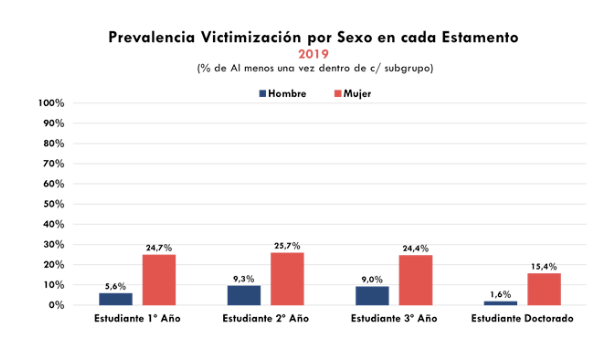
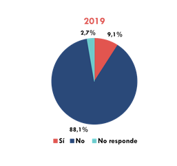

Sociología del Género
Clase 11: Violencia de género
SOL191 · Instituto de Sociología · PUC
Violencia de género
SOL191 · Clase 11: Violencia de género
Advertencia de contenido
Hoy hablaremos de violencia física, sexual, psicológica y digital, acoso, femicidio y abuso sexual. Puede ser difícil o doloroso, sobre todo si es parte de tu experiencia.
- Puedes salir de la sala, tomar agua o una pausa cuando lo necesites, sin pedir permiso ni dar explicaciones.
- Puedes participar de forma más pasiva o no compartir experiencias personales: nadie está obligado/a a hacerlo.
- Puedes volver cuando quieras.
- Si quieres conversar después, escríbeme a mí o a las ayudantes.
Fono 1455 (SernamEG): orientación gratuita y confidencial en violencia contra las mujeres.
Objetivos de hoy
- Dimensionar la violencia de género en Chile con datos actuales y entender qué miden (y qué no) esas cifras.
- Comparar dos teorías de la violencia: la misoginia como control social (Manne) y la violencia como mensaje entre hombres (Segato).
- Analizar un caso reciente a partir de una columna de Manne: cómo los grupos de pares habilitan y encubren la violencia.
- Discutir los alcances y límites de la respuesta institucional chilena (Ley 21.675, violencia digital).
¿Qué tan extendida es? Encuesta Nacional de Violencia contra las Mujeres 2024
1 de cada 3 mujeres (33,4%) ha sufrido violencia psicológica, física o sexual en su vida; 1 de cada 5 (20,3%) en el último año.
- Psicológica: 28,6% vida · 18,5% año
- Física: 10,9% vida · 3,5% año
- Sexual: 8,7% vida · 3,2% año
- Agresor principal más frecuente: ex pareja (33% en violencia psicológica, 35% en física)
41,4% ha sufrido violencia en espacios públicos alguna vez (31,3% insultos sexuales; 22,5% tocaciones sin consentimiento).
- Solo 12,1% denunció el último episodio de violencia sexual (16,3% en 2020).
Fuente: Subsecretaría de Prevención del Delito, ENVCM 2024. Mujeres de 15 a 65 años, zonas urbanas, muestra probabilística (n = 7.100).
Femicidios en Chile
En 2024: 43 femicidios consumados, 319 frustrados y 80 tentados (SernamEG).
- Los consumados se mantienen estables (43-44 por año desde 2020).
- Los frustrados se han duplicado: 151 en 2020 → 319 en 2024.
¿Qué indica que los consumados se mantengan y los frustrados aumenten? ¿Más violencia, más registro o más intervención a tiempo?
Cifras PUC: violencia sexual (2019)



¿Cómo explicamos la violencia?
La violencia sexual como mecanismo de desigualdad (Armstrong et al. 2018)
La violencia sexual es causa y consecuencia de desigualdades de género, raza/etnia, clase, sexualidad, edad, discapacidad y ciudadanía. Funciona como mecanismo de desigualdad que se vuelve más eficaz porque se silencia.
Ideas clave de la literatura feminista e interseccional:
- Poder: es dominación, no desviación individual (p. ej., violación como arma de guerra y colonización).
- Interseccionalidad: las políticas centradas solo en género o solo en raza fallan a las mujeres de color (Crenshaw, Collins).
- Organizaciones: universidades, iglesias, ejércitos o cárceles la facilitan y encubren.
- Cultura: guiones heterosexuales (él insiste, ella resiste) y mitos de violación que culpan a la víctima.
- Masculinidades: la violencia sexual sostiene la masculinidad y produce jerarquías entre hombres.
- El poder de definir: quién decide qué cuenta como violencia (en la ley, en la cultura y en la propia experiencia).
El mito de la “violación real” (Armstrong et al. 2018)
El arquetipo: un desconocido ataca con violencia a una mujer “respetable”; ella resiste y denuncia.
Lo que muestra la evidencia:
- La mayoría de las víctimas conoce a su agresor.
- Muchas no se resisten físicamente; la mayoría de los agresores no usa fuerza física ni armas.
- La mayoría no denuncia y muchas no nombran su experiencia como violación.
- Las denuncias falsas son raras (2–10%, similar a otros delitos violentos).
Consecuencias institucionales:
- “Segundas agresiones”: policía, fiscalía, tribunales y servicios médicos evalúan la credibilidad según edad, raza, clase o sexualidad.
- Apostar solo por la vía penal llevó a un feminismo carcelario que dejó fuera a mujeres racializadas y pobres.
- Silencio sociológico: entre 1975 y 2017, las tres revistas centrales de la disciplina publicaron solo 13 artículos sobre violencia sexual.
¿Cuánto se parece este arquetipo a la imagen que circula en los medios y en nuestras conversaciones? ¿Y a los datos de Chile que vimos?
Misoginia según Manne
(Manne 2018, Down Girl)
Más allá del odio u hostilidad individual hacia las mujeres, la misoginia es un sistema de control social. Funciona para fiscalizar y asegurar la subordinación de la mujer y mantener normas patriarcales.
- Sexismo es la ideología que racionaliza y justifica el patriarcado; la misoginia es “la policía” que castiga a quienes desafían ese orden.
- El castigo misógino: castigo a las mujeres que desafían las normas de género o fracasan en servir los intereses de los hombres (abuso verbal, violencia física, aislamiento social, entre otras).
¿Ejemplos de situaciones en las que las mujeres desafían las normas y son fiscalizadas? ¿Y de hombres?
Himpathy e injusticia epistémica
“Himpathy” (Manne): simpatía excesiva hacia los hombres que ejercen violencia, que minimiza sus actos, protege su futuro y desplaza la culpa hacia la víctima.
Caso Martín Pradenas. Condenado en 2023 a 17 años por siete delitos sexuales contra seis personas, entre ellas Antonia Barra. Gran parte del debate público se centró en su familia, su estatus y su futuro.
Injusticia epistémica (Fricker; usada por Manne): se resta credibilidad a las mujeres como testigos de su propia experiencia.
Caso Nabila Rifo. En 2017 la Corte Suprema recalificó el femicidio frustrado como lesiones graves, porque “no quedó demostrado cabalmente el dolo de matar”, y rebajó la condena de su agresor.
Segato: la violencia como mensaje
(Segato 2016, cap. 1, selección de pasajes)
La violación es violencia expresiva más que instrumental: su fin es expresar el control absoluto de una voluntad sobre otra. Por eso es un enunciado, y se dirige a interlocutores.
Eje vertical: el agresor habla a la víctima. Se presenta como “moralizador”: la mujer debe ser contenida, disciplinada.
Eje horizontal (su mayor aporte): habla a sus pares. Pide ingreso a la “hermandad viril” y compite por un lugar en ella.
- La masculinidad es un estatus que se conquista y debe reconfirmarse, mediante un tributo que entregan las mujeres.
- Los violadores, la mayoría de las veces, “no actúan en soledad”.
- En el hogar el hombre abusa porque puede; en el espacio público, para demostrar que puede.
Manne y Segato: ¿en qué se parecen y en qué difieren?
| Manne | Segato | |
|---|---|---|
| ¿Qué es la violencia? | Castigo: control social sobre mujeres que desafían el orden | Mensaje: acto expresivo de dominio |
| ¿A quién se dirige? | A la mujer que transgrede (y a todas, como advertencia) | A la víctima y a los otros hombres |
| ¿Qué la sostiene? | La himpathy y el descrédito de las víctimas | La hermandad masculina y el mandato de demostrar masculinidad |
En parejas (3 min): piensen en un caso de violencia de pareja en el hogar. ¿Qué teoría lo explica mejor? ¿Y un caso de violencia sexual grupal?
Actividad: lectura y discusión de la columna de Manne
Manne, K. (2026, 20 de octubre). “What Makes Men in Groups Behave So Badly?” The New York Times.
Caso: el chat grupal de la fraternidad Chi Phi (Cornell) la noche en que una estudiante (“Jane Doe”) denuncia haber sido agredida sexualmente por siete hombres.
1. Lectura individual (10 min). Mientras leen, marquen:
- un pasaje que ilustre la himpathy,
- un pasaje que ilustre el eje horizontal de Segato (hablarle a los pares),
- un dato o evidencia que use Manne.
Advertencia: la columna cita lenguaje sexual explícito del chat.
Actividad: discusión en grupos (25 min)
En grupos de 4.
A. Mecanismos (8 min). ¿Cómo explica Manne que hombres que “eran algo así como amigos” de Jane Doe la ofrecieran al grupo? Identifiquen en el texto el “bro code”, el silencio de quienes vieron el chat y la himpathy posterior (¿quiénes terminan sintiéndose víctimas?).
B. Teoría (8 min). El chat como “escenario”: ¿qué mensajes se dirigen a la víctima y cuáles a los pares? ¿Qué agrega Segato que Manne no explica, o al revés? Usen el testimonio de Diego Estrada (ex presidente de una fraternidad).
C. Evidencia (9 min). Manne cita un estudio según el cual los hombres que entran a fraternidades tienen 3 veces más probabilidad de cometer violencia sexual en su primer año. ¿Cuánto apoya este dato la frase “las fraternidades pueden convertir hombres en violadores”? ¿Qué otra explicación habría que descartar?
Plenario abierto: ¿cómo abordarlo? (15 min)
Si el problema no es solo el individuo, sino el grupo que habilita y calla y las instituciones que lo permiten:
- ¿Cómo abordarían este problema? ¿Qué debería cambiar y quién es responsable de cambiarlo?
- Manne propone prohibir las fraternidades. ¿Están de acuerdo? ¿Cuál sería el equivalente en Chile?
Violencia digital en Chile (Ananías et al. 2023)
Encuesta online a 531 mujeres (cis, trans y no binaries) en 2020, muestra no probabilística por cuotas (ONG Amaranta). 73,8% había sufrido violencia digital.
- Más reportado: violencia verbal (66,4%), acoso u hostigamiento (59%), envío de fotos o videos de penes sin consentimiento (49,6%).
- Agresores: anónimos o perfiles falsos (41,9%), pareja o ex pareja (18,1%), hombres del entorno (14,8%).
- 46,3% de las encuestadas vivió control o violencia digital de una pareja (revisar el celular, exigir contraseñas o ubicación).
- Solo 12,2% intentó denunciar, la mayoría sin respuesta positiva.
- No hubo más ataques a activistas que a no activistas: el género sería el principal factor de exposición.
- Al publicarse el estudio, Chile no tenía una ley integral sobre violencia digital.
El 73,8% incluye a 58 mujeres que primero dijeron que no habían sufrido violencia, pero luego describieron situaciones de control de su pareja. ¿Qué nos dice esto sobre cómo se mide (y se reconoce) la violencia?
Chile: marco legal y la Ley 21.675 (2024)
Hitos legales
- Ley 20.480 (2010): tipifica el femicidio
- Ley 21.212 (2020, “Ley Gabriela”): incluye parejas sin convivencia
- Ley 21.565 (2023): protección y reparación a familias de víctimas de femicidio
- Ley 21.675 (2024): prevenir, sancionar y erradicar la violencia contra las mujeres en razón de su género
Ley 21.675, art. 6: nueve formas de violencia
Física, psicológica, sexual, económica, simbólica, institucional, política, en el trabajo y gineco-obstétrica. Es una lista abierta, que va más allá de la pareja y la familia.
Reflexión final (Wooclap)
3 minutos, anónimo:
- ¿Qué idea de hoy cambia cómo entiendes la violencia de género?
- Si pudieras cambiar una cosa en tu entorno (universidad, grupo de amigos, redes), ¿qué sería?
Fono 1455 (SernamEG) · Fono 149 (Carabineros, Fono Familia)
SOL191 Sociología del Género · Clase 11